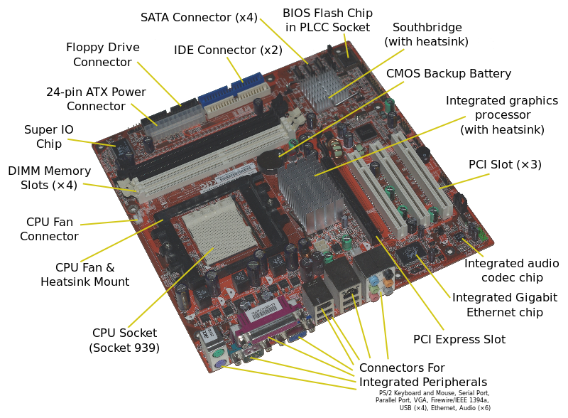
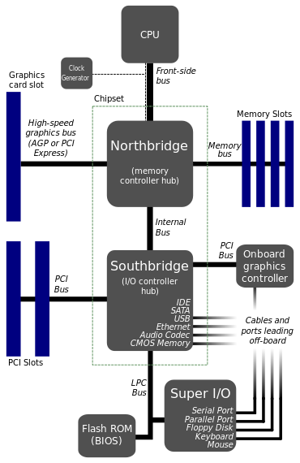

Motherboard
Motherboard is sometimes abbreviated as mobo.A motherboard is the main printed circuit board (PCB) found in computers and other expandable systems. It holds many of the crucial electronic components of the system.It include sound cards, video cards, network cards, hard drives, or other forms of persistent storage; TV tuner cards, cards providing extra USB or FireWire slots and a variety of other custom components.
Design
A motherboard provides the electrical connections by which the other components of the system communicate (talk with each other.) Unlike a backplane, it also contains the central processing unit and hosts other subsystems and devices.
A typical desktop computer has its microprocessor, main memory, and other essential components connected to the motherboard. Other components such as external storage, controllers for video display and sound, and peripheral devices may be attached to the motherboard as plug-in cards or via cables, in modern computers it is increasingly common to integrate some of these peripherals into the motherboard itself.
An important component of a motherboard is the microprocessor's supporting chipset, which provides the supporting interfaces between the CPU and the various buses and external components. This chipset determines, to an extent, the features and capabilities of the motherboard.
Modern motherboards include:
- Sockets (or slots) in which one or more microprocessors may be installed. In the case of CPUs in BGA packages, such as the VIA C3, the CPU is directly soldered to the motherboard.
- Slots into which the system's main memory is to be installed (typically in the form of DIMM modules containing DRAM chips)
- A chipset which forms an interface between the CPU's front-side bus, main memory, and peripheral buses
- Non-volatile memory chips (usually Flash ROM in modern motherboards) containing the system's firmware or BIOS
- A clock generator which produces the system clock signal to synchronize the various components
- Slots for expansion cards (the interface to the system via the buses supported by the chipset)
- Power connectors, which receive electrical power from the computer power supply and distribute it to the CPU, chipset, main memory, and expansion cards. As of 2007, some graphics cards (e.g. GeForce 8 and Radeon R600) require more power than the motherboard can provide, and thus dedicated connectors have been introduced to attach them directly to the power supply.Most disk drives also connect to the power supply via dedicated connectors.
Additionally, nearly all motherboards include logic and connectors to support commonly used input devices, such as PS/2 connectors for a mouse and keyboard. Early personal computers such as the Apple II or IBM PC included only this minimal peripheral support on the motherboard. Occasionally video interface hardware was also integrated into the motherboard; for example, on the Apple II and rarely on IBM-compatible computers such as the IBM PC Jr. Additional peripherals such as disk controllers and serial ports were provided as expansion cards.
Given the high thermal design power of high-speed computer CPUs and components, modern motherboards nearly always include heat sinks and mounting points for fans to dissipate excess heat.
CPU socketsA CPU (central processing unit) socket or slot is an electrical component that attaches to a printed circuit board (PCB) and is designed to house a CPU (also called a microprocessor). It is a special type of integrated circuit socket designed for very high pin counts. A CPU socket provides many functions, including a physical structure to support the CPU, support for a heat sink, facilitating replacement (as well as reducing cost), and most importantly, forming an electrical interface both with the CPU and the PCB. CPU sockets on the motherboard can most often be found in most desktop and server computers (laptops typically use surface mount CPUs), particularly those based on the Intel x86 architecture. A CPU socket type and motherboard chipset must support the CPU series and speed.
Integrated peripheralsWith the steadily declining costs and size of integrated circuits, it is now possible to include support for many peripherals on the motherboard. By combining many functions on one PCB, the physical size and total cost of the system may be reduced; highly integrated motherboards are thus especially popular in small form factor and budget computers.
Peripheral card slotsA typical motherboard of 2012 will have a different number of connections depending on its standard.
A standard ATX motherboard will typically have two or three PCI-E 16x connection for a graphics card, one or two legacy PCI slots for various expansion cards, and one or two PCI-E 1x (which has superseded PCI). A standard EATX motherboard will have two to four PCI-Express 16x connection for graphics cards, and a varying number of PCI and PCI-E 1x slots. It can sometimes also have a PCI-E 4x slot (will vary between brands and models).
Some motherboards have two or more PCI-E 16x slots, to allow more than 2 monitors without special hardware, or use a special graphics technology called SLI (for Nvidia) and Crossfire (for ATI). These allow 2 to 4 graphics cards to be linked together, to allow better performance in intensive graphical computing tasks, such as gaming, video editing, etc.
Temperature and reliabilityMotherboards are generally air cooled with heat sinks often mounted on larger chips, such as the Northbridge, in modern motherboards. Insufficient or improper cooling can cause damage to the internal components of the computer, or cause it to crash. Passive cooling, or a single fan mounted on the power supply, was sufficient for many desktop computer CPU's until the late 1990s; since then, most have required CPU fans mounted on their heat sinks, due to rising clock speeds and power consumption. Most motherboards have connectors for additional case fans as well. Newer motherboards have integrated temperature sensors to detect motherboard and CPU temperatures, and controllable fan connectors which the BIOS or operating system can use to regulate fan speed. Some computers (which typically have high-performance microprocessors, large amounts of RAM, and high-performance video cards) use a water-cooling system instead of many fans.
Some small form factor computers and home theater PCs designed for quiet and energy-efficient operation boast fan-less designs. This typically requires the use of a low-power CPU, as well as careful layout of the motherboard and other components to allow for heat sink placement.
Bootstrapping using the BIOS
Motherboards contain some non-volatile memory to initialize the system and load some startup software, usually an operating system, from some external peripheral device. Microcomputers such as the Apple II and IBM PC used ROM chips mounted in sockets on the motherboard. At power-up, the central processor would load its program counter with the address of the boot ROM and start executing instructions from the ROM. These instructions initialized and tested the system hardware, displayed system information on the screen, performed RAM checks, and then loaded an initial program from an external or peripheral device (disk drive). If none was available, then the computer would perform tasks from other memory stores or display an error message, depending on the model and design of the computer and the ROM version. For example, both the Apple II and the original IBM PC had Microsoft Cassette BASIC in ROM and would start that if no program could be loaded from disk.
Most modern motherboard designs use a BIOS, stored in an EEPROM chip soldered to or socketed on the motherboard, to bootstrap an operating system. Non-operating system boot programs are still supported on modern IBM PC-descended machines, but nowadays it is assumed that the boot program will be a complex operating system such as MS Windows NT or Linux. When power is first supplied to the motherboard, the BIOS firmware tests and configures memory, circuitry, and peripherals. This Power-On Self Test (POST) may include testing some of the following things:
- Video adapter
- Cards inserted into slots, such as conventional PCI
- Floppy drive
- Temperatures, voltages, and fan speeds for hardware monitoring
- CMOS used to store BIOS setup configuration
- Keyboard and Mouse
- Network controller
- Optical drives: CD-ROM or DVD-ROM
- SCSI hard drive
- IDE, EIDE, or SATA Hard disk
- Security devices, such as a fingerprint reader or the state of a latch switch to detect intrusion
- USB devices, such as a memory storage device
On recent motherboards, the BIOS may also patch the central processor microcode if the BIOS detects that the installed CPU is one for which errata have been published.